CHAPTER 07
铸造
工程材料与机械制造基础（第3版）
铸造概述
铸造的定义与特点
- 铸造：熔融金属浇注/压射/吸入铸型型腔，冷却凝固获得零件或毛坯
- 优点：一次成形、适应性强、成本低、适合复杂内腔
- 不足：晶粒粗大、缩孔/缩松/气孔等缺陷、力学性能不如锻件
- 现代发展：集成计算机凝固模拟、自动控制、机器人技术
●
液态金属成形理论基础
液态金属成形理论基础
§7.1 液态金属成形理论基础 — 流动性
- 合金流动性：液态合金填充铸型的能力
- 流动性好 → 成形复杂薄壁件，利于排气补缩
- 流动性差 → 冷隔、浇不足、气孔、夹渣、缩孔
- 测量：螺旋形试样，越长流动性越好
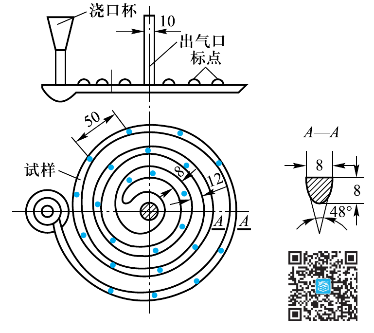
液态金属成形理论基础
影响流动性的因素 — 合金成分
- 纯金属和共晶成分：恒温凝固→界面光滑→流动性最好
- 宽凝固范围合金：树枝晶阻碍→流动性差
- 铁碳合金中：共晶成分铸铁流动性最好
- 结论：应优先选共晶或近共晶成分合金
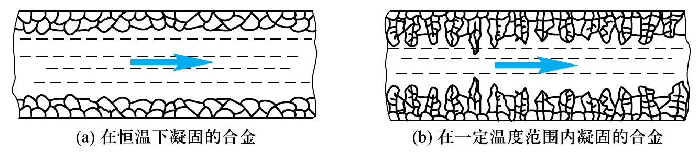
铁碳合金的流动性与其碳的质量分数的关系
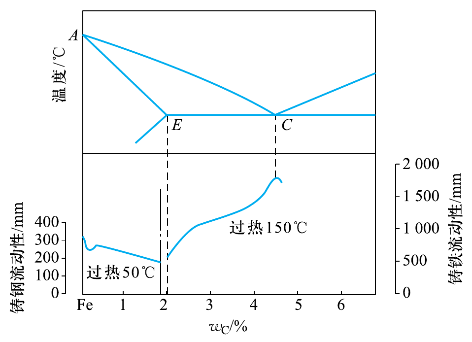
液态金属成形理论基础
影响流动性的因素 — 物理性质与温度
- 比热容↑密度↑导热系数↓结晶潜热↑ → 流动性↑
- 黏度↓ → 流动性↑
- 温度↑ → 流动性直线上升
- 温度过高→氧化吸气严重→气孔夹渣等缺陷
- 浇注温度必须合理，不可过高
液态金属成形理论基础
充型能力及影响因素
- 充型能力 = 合金流动性 + 工艺因素
- 铸型条件：蓄热能力↑排气差→充型能力↓
- 浇注条件：系统复杂阻力大→充型差
- 静压力↑温度↑→充型能力↑
- 流动性差的合金可通过改善工艺条件补偿
液态金属成形理论基础
§7.1 铸造合金的收缩
- 收缩：合金冷却时体积或尺寸缩小的现象
- 三阶段：液态收缩 → 凝固收缩 → 固态收缩
- 液态收缩+凝固收缩 → 缩孔和缩松
- 固态收缩 → 内应力、变形和裂纹
- 灰铸铁体收缩率约7%，铸钢约12%
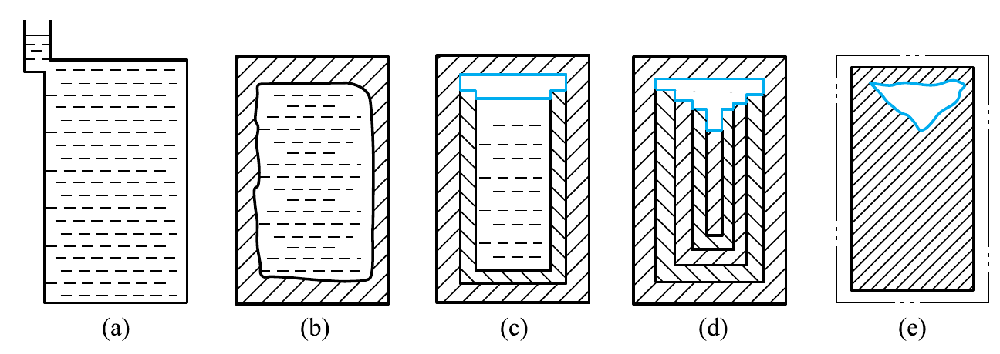
液态金属成形理论基础
缩孔与缩松的形成机理
- 缩孔：集中孔洞，近倒锥形，内表面不光滑
- 缩松：细小分散孔洞，分布于轴线/厚大断面
- 纯金属/共晶→逐层凝固→倾向集中缩孔
- 宽凝固范围→同时凝固→树枝晶分隔液体→缩松
- 缩孔+缩松总容积一定，增大冷速促转化
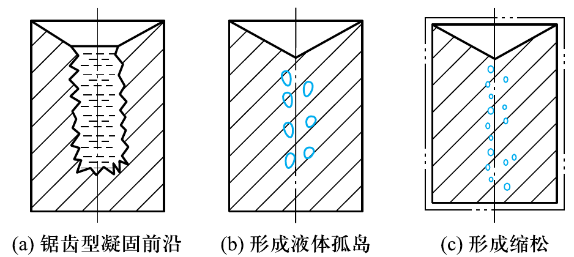
冒口补缩示意图
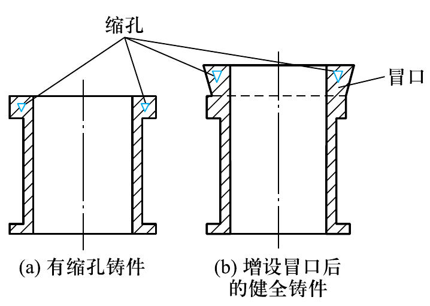
液态金属成形理论基础
防止缩孔的方法
- 顺序凝固原则：远离冒口先凝→冒口最后凝
- 设置冒口和冷铁，控制凝固方向
- 缩孔转移至冒口，切除冒口得完好铸件
- 计算机凝固模拟可准确预测缩孔位置
- 方法：等温线法、内切圆法、计算机模拟

铸造热应力与变形
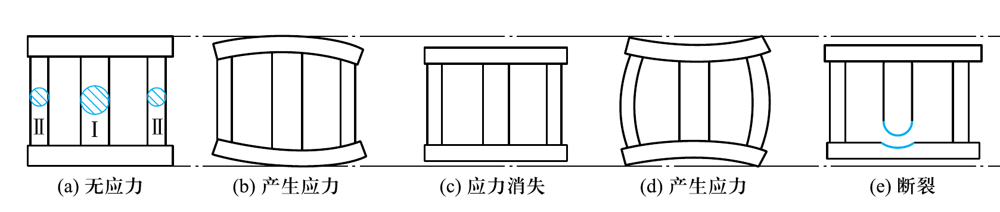
液态金属成形理论基础
§7.1 铸造内应力与变形裂纹
- 热应力：壁厚不均→冷却速度不同→收缩量不同
- 机械应力：收缩受铸型/型芯机械阻碍
- 厚壁/心部受拉伸，薄壁/表层受压缩
- 防止变形：同时凝固、反变形法、去应力退火
- 热裂（高温沿晶界）vs 冷裂（低温直线状）

车床床身导轨的挠曲变形
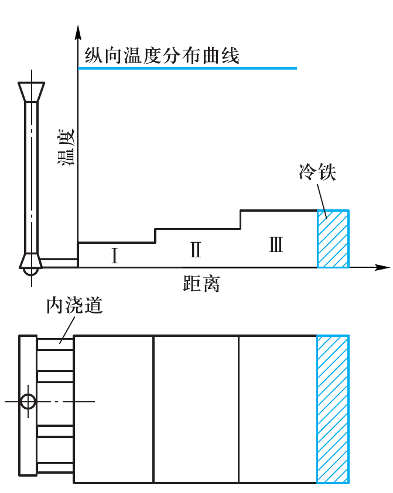
液态金属成形理论基础
浇注位置与分型面
- 重要加工面→下面；需补缩厚壁→上部/侧面
- 分型面选在最大截面，尽量一个分型面
- 减少活块和型芯数量
- 铸件大部分放同一砂箱内

分型面应选在铸件最大截面上
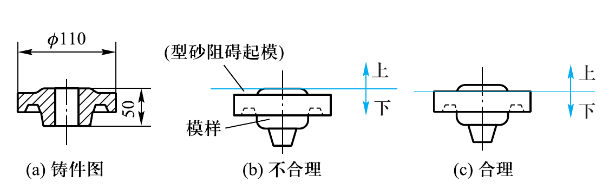
液态金属成形理论基础
主要工艺参数
- 铸造收缩率：灰铸铁0.7~1.0%，铸钢1.5~2.0%
- 机械加工余量：铸铁件3~15mm
- 起模斜度：15'~3°
- 铸造圆角：内圆角≈壁厚1/2
- 芯头定位固定型芯；最小铸出孔12~50mm

铸造圆角

支座的铸造工艺图

●
砂型铸造
砂型铸造
§7.2 砂型铸造
- 流程：零件图→铸件图→模样→造型→合箱→浇注→落砂→清理→检验
- 优点：适应性极强、成本低、各种合金均可铸造
- 缺点：一型一次使用、粉尘污染、精度低
- 手工造型（灵活/低效）vs 机器造型（高效/高精）

机器辅助起模方法

●
特种铸造
特种铸造
§7.3 熔模铸造与金属型铸造
- 熔模铸造：压制蜡模→结壳(3~7次)→脱蜡→焙烧→浇注
- 熔模精度IT14~IT11，适用涡轮叶片等复杂精密件
- 金属型铸造可反复使用（一型多铸）
- 金属型需预热、排气、喷涂料、尽早开型
- 适用大批量非铁金属件

卧式冷压室式压铸机的工作过程

特种铸造
§7.3 压力铸造与离心铸造
- 压铸：高压+高速充型，精度IT13~IT11
- 效率最高（班产600~700件），最小壁厚0.5mm
- 不足：卷气→气孔→不能热处理
- 离心铸造：高速旋转离心力充型
- 省型芯浇冒口，组织致密可铸双金属件
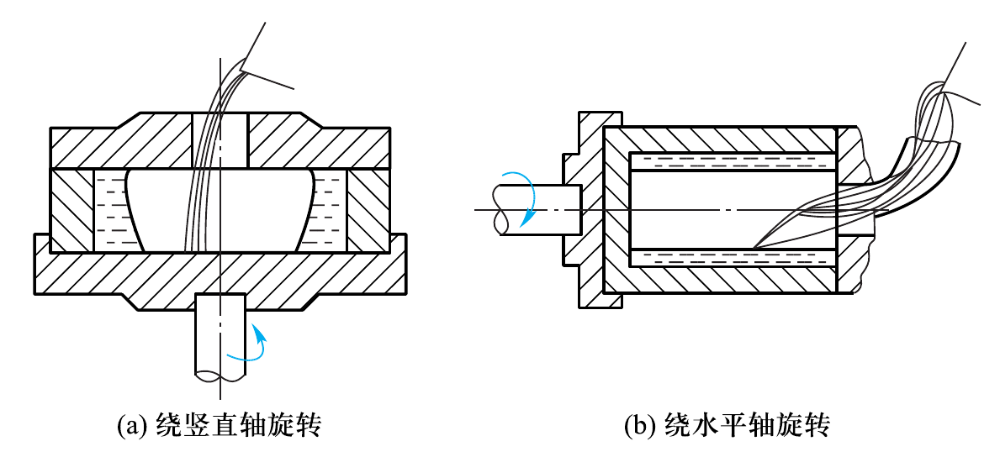
反压铸造工艺原理

特种铸造
§7.3 其他特种铸造方法
- 反压铸造（压差）：充型平稳，可铸0.5mm薄壁件
- 挤压铸造（液态模锻）：组织致密接近锻件性能
- 实型铸造（消失模）：泡沫塑料模，无分型面
- 磁型铸造：磁丸固结，冷却快3倍
- 气冲造型：紧实时间<0.1s，精度高无噪声
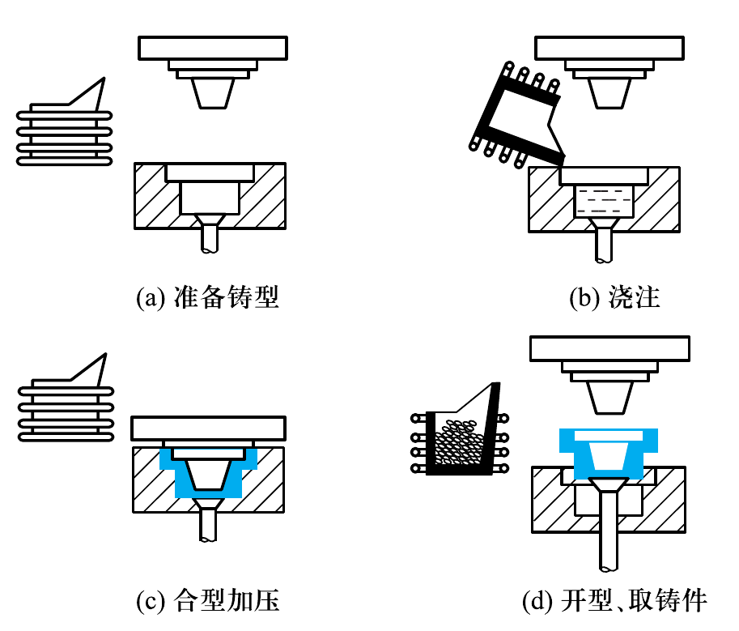
磁型铸造原理示意图
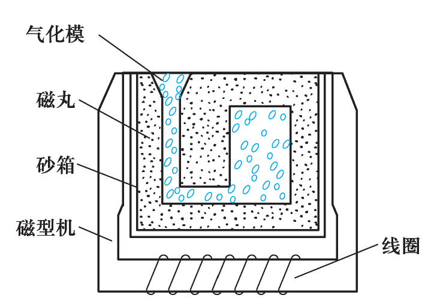
●
常用合金铸件生产
常用合金铸件生产
§7.4 灰铸铁与球墨铸铁
- 灰铸铁：冲天炉熔炼，铸造性能优良不需冒口冷铁
- 孕育处理：加硅铁0.25~0.6%→石墨细化
- 球墨铸铁：高碳低硫磷，球化+孕育处理
- 球化处理：稀土镁合金冲入法
- 球墨铸铁强度远高于灰铸铁

铸件的结构圆角

常用合金铸件生产
§7.4 可锻铸铁、蠕墨铸铁与铸钢
- 可锻铸铁：白口毛坯+900~950°C石墨化退火
- 蠕墨铸铁：铸造性能好，一般铸态使用
- 铸钢：综合力学性能优于铸铁
- 铸钢难点：熔点高(~1500°C)、流动性差、收缩率大(~2%)
- 熔炼：三相电弧炉为主，须正火或退火处理
●
铸件结构设计
铸件结构设计
§7.5 铸件结构设计 — 壁厚与壁连接
- 壁厚适当：大于最小壁厚，可用加强筋
- 壁厚均匀：减小厚壁差防热节和缩孔
- 壁连接用圆角：避免直角防金属聚集
- 小型件交错连接，大型件环状连接
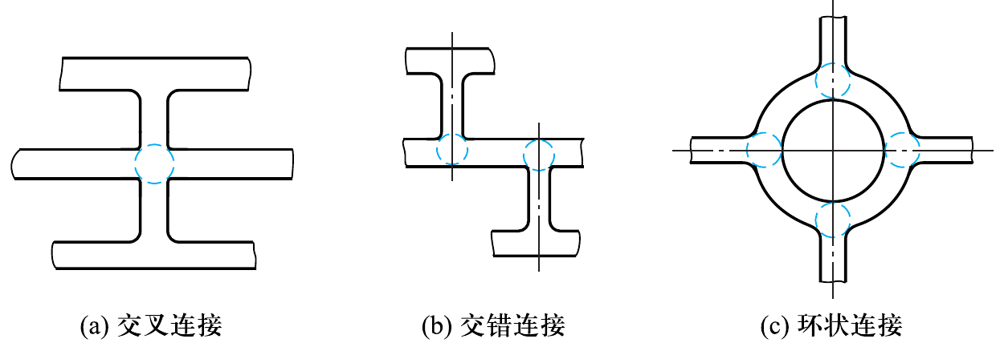
铸件不等厚壁之间的连接

铸件结构设计
§7.5 减少变形与外形设计
- 细长件/大平板件→对称结构或加强筋
- 弯曲轮辐/奇数轮辐→可自由收缩减小应力
- 外形避免侧凹，分型面平直
- 减少型芯数量，以砂垛代替型芯
- 不加工面设计结构斜度便于起模
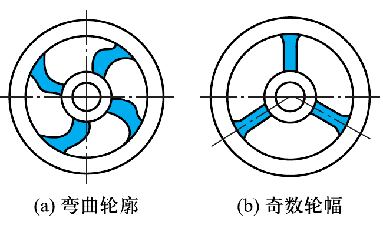
凸台设计应避免活块造型